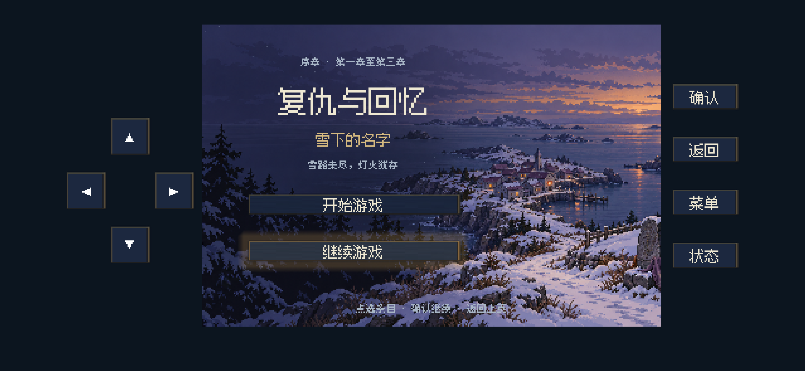
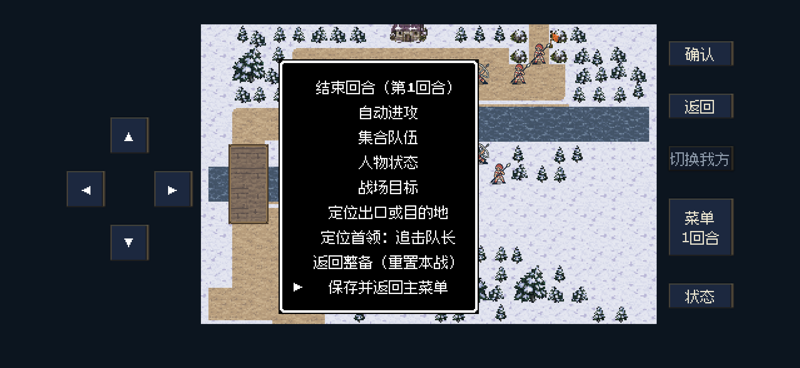
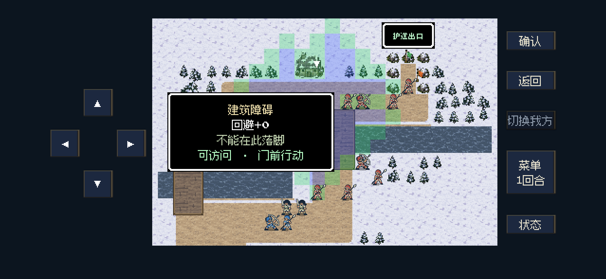
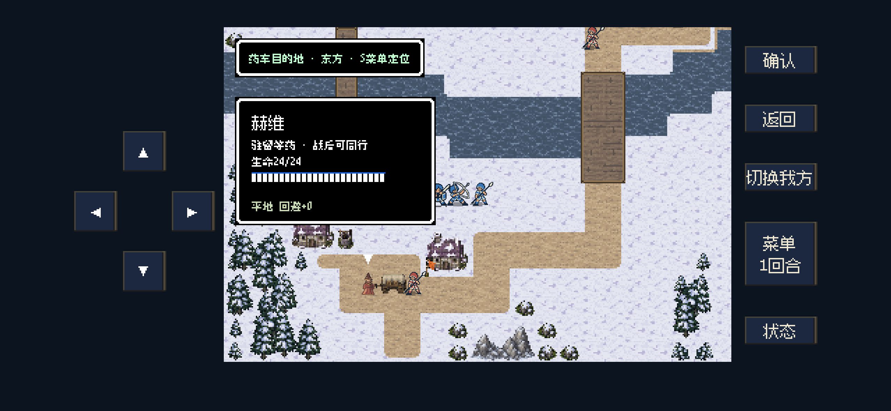

iPhone 16反馈 · 9项修订
第6项已有后续完整修改：诊所岗位、新版运输员、交接和主动邀请。下方赫维画面保留初版记录。
本地代码与iPhone 16尺寸后台验证；未安装、更新或访问iPhone。使用独立临时记录与受控关卡摆位，以下画面不是新增真机截图。
9项修改依据（Markdown） · 代表性检查 · 增量检查 · 交锋音乐检查
走路 → 交锋切曲 → 返回地图
真实Godot混音输出：地图配乐下5次脚步，进入约164 BPM交锋版本，再从原位置续播地图曲。Dummy驱动录音，未通过扬声器播放；不是人耳验收。
单独脚步音，保留实际资源电平：
调用顺序 · 音频指标
有有效记录，默认选中继续
空记录或只有损坏记录时仍默认开始；已有有效记录时选中继续，不自动读取或覆盖。

九项战场菜单整页显示
手机行高缩为20逻辑像素，短行动菜单随内容缩小；普通战场菜单无需翻页。上下选择与点击都保留。

蓝色移动区、绿色攻击外圈与建筑提示
绿色按实际可落脚位置、装备、可用攻击法术与生命消耗计算。建筑提示区分可访问、已访问和仅作地形；门前被角色占据时仍能在角色卡看到提示。

赫维新版形象与送药规则说明
修复入队前中立标记导致的旧图回退。赫维驻留等药，药车自动护送、敌近暂停，属于送药支线现有规则；清路后可正常抵达诊所。
